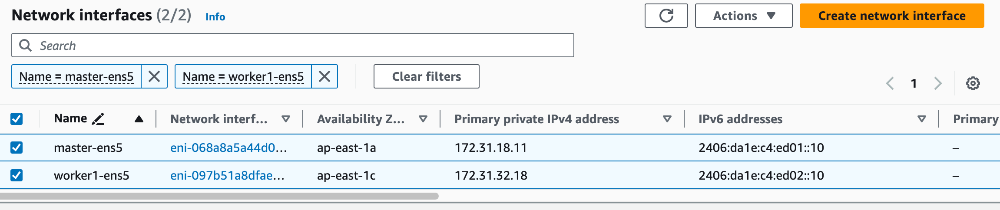
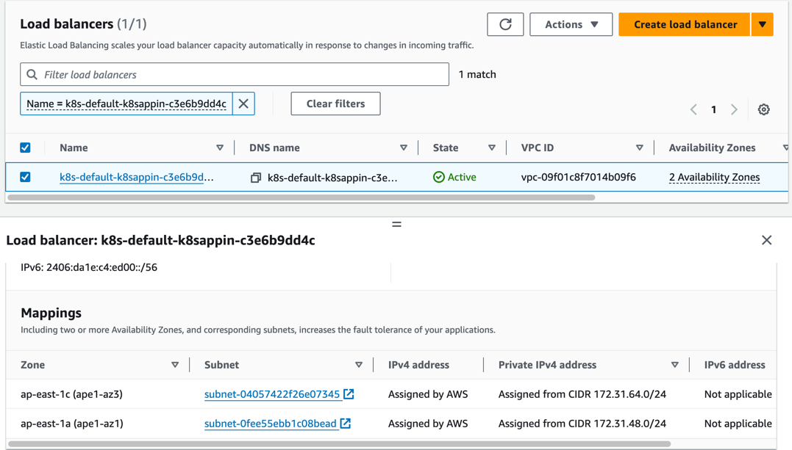

Running On AWS
English | 简体中文
Introduction
With a multitude of public cloud providers available, such as Alibaba Cloud, Huawei Cloud, Tencent Cloud, AWS, and more, it can be challenging to use mainstream open-source CNI plugins to operate on these platforms using underlay networks. Instead, one has to rely on proprietary CNI plugins provided by each cloud vendor, leading to a lack of standardized underlay solutions for public clouds. This page introduces Spiderpool, an underlay networking solution designed to work seamlessly in any public cloud environment. A unified CNI solution offers easier management across multiple clouds, particularly in hybrid cloud scenarios.
Features
Spiderpool can operate in public cloud environments using the ipvlan underlay CNI and provide features such as node topology and MAC address validity resolution. Here is how it works:
-
When using underlay networks in a public cloud environment, each network interface of a cloud server can only be assigned a limited number of IP addresses. To enable communication when an application runs on a specific cloud server, it needs to obtain the valid IP addresses allocated to different network interfaces within the VPC network. To address this IP allocation requirement, Spiderpool introduces a CRD named
SpiderIPPool. By configuring the nodeName and multusName fields inSpiderIPPool, it enables node topology functionality. Spiderpool leverages the affinity between the IP pool and nodes, as well as the affinity between the IP pool and ipvlan Multus, facilitating the utilization and management of available IP addresses on the nodes. This ensures that applications are assigned valid IP addresses, enabling seamless communication within the VPC network, including communication between Pods and also between Pods and cloud servers. -
In a public cloud VPC network, network security controls and packet forwarding principles dictate that when network data packets contain MAC and IP addresses unknown to the VPC network, correct forwarding becomes unattainable. This issue arises in scenarios where Macvlan or OVS based underlay CNI plugins generate new MAC addresses for Pod NICs, resulting in communication failures among Pods. To address this challenge, Spiderpool offers a solution in conjunction with ipvlan CNI. The ipvlan CNI operates at the L3 of the network, eliminating the reliance on L2 broadcasts and avoiding the generation of new MAC addresses. Instead, it maintains consistency with the parent interface. By incorporating ipvlan, the legitimacy of MAC addresses in a public cloud environment can be effectively resolved.
Prerequisites
-
The system kernel version must be greater than 4.2 when using ipvlan as the cluster's CNI.
-
Helm is installed.
-
Understand the basics of AWS VPC Public and Private Subnets.
In an AWS VPC, a subnet is categorized as a public subnet if it has an outbound route configured with the Internet Gateway as the next hop for destinations 0.0.0.0/0 or ::/0. Otherwise, a subnet is considered a private subnet if it lacks this specific outbound routing configuration.

Steps
AWS Environment
-
Create a public subnet and multiple private subnets within a VPC, and deploy virtual machines in the private subnets as shown in the following picture:
We will create one public subnet and two private subnets within the same VPC. Each private subnet should be deployed in a different availability zone. A EC2 instance as a jump server will be created in the public subnet for secure access. Additionally, two AWS EC2 instances will be created in the respective different private subnets to set up the Kubernetes cluster.

-
Bind IPv4 and IPv6 addresses to the network interface when creating an instance, as the picture below:

-
Bind IP prefix delegation to each network interface of the instances in which we can use it to allocate IP address for pod:
IP prefix delegation just like the secondary IP address that could bind a CIDR range for instance. The number of IP prefix delegation can be referenced from AWS EC2 instance specifications. The instance can bind the same number of prefix delegations as the number of secondary IPs that can be bound to the instance's network interface. In this example, we choose to bind 1 network interface and 1 IP prefix delegation to the instance.

| Node | ens5 primary IP | ens5 secondary IPs | ens6 primary IP | ens6 secondary IPs | |---------|-----------------|---------------------------|-----------------|---------------------------| | master | 172.31.22.228 | 172.31.16.4-172.31.16.8 | 210.22.16.10 | 210.22.16.11-210.22.16.15 | | worker1 | 180.17.16.17 | 180.17.16.11-180.17.16.15 | 210.22.32.10 | 210.22.32.11-210.22.32.15 | -
Create an AWS NAT gateway to allow instances in the VPC's private subnets to connect to external services. The NAT gateway serves as an outbound traffic gateway for the cluster. Follow the NAT gateway documentation to create a NAT gateway:
Create a NAT gateway in the public subnet,
public-172-31-0-0, and configure the route table of the private subnets to set the next-hop of the outbound route 0.0.0.0/0 to NAT gateway. (IPv6 addresses provided by AWS are globally unique and can access the internet directly via the Internet Gateway).

-
Use the configured virtual machines to establish a Kubernetes cluster. The available IP addresses for the nodes and the network topology diagram of the cluster are shown below:

Install Spiderpool
Install Spiderpool via helm:
helm repo add spiderpool https://spidernet-io.github.io/spiderpool
helm repo update spiderpool
helm install spiderpool spiderpool/spiderpool --namespace kube-system --set ipam.enableStatefulSet=false --set multus.multusCNI.defaultCniCRName="ipvlan-ens5"
If you are using a cloud server from a Chinese mainland cloud provider, you can enhance image pulling speed by specifying the parameter
--set global.imageRegistryOverride=ghcr.m.daocloud.io.Spiderpool allows for fixed IP addresses for application replicas with a controller type of
StatefulSet. However, in the underlay network scenario of public clouds, cloud instances are limited to using specific IP addresses. When StatefulSet replicas migrate to different nodes, the original fixed IP becomes invalid and unavailable on the new node, causing network unavailability for the new Pods. To address this issue, setipam.enableStatefulSettofalseto disable this feature.Specify the name of the NetworkAttachmentDefinition instance for the default CNI used by Multus via
multus.multusCNI.defaultCniCRName. If themultus.multusCNI.defaultCniCRNameoption is provided, an empty NetworkAttachmentDefinition instance will be automatically generated upon installation. Otherwise, Multus will attempt to create a NetworkAttachmentDefinition instance based on the first CNI configuration found in the /etc/cni/net.d directory. If no suitable configuration is found, a NetworkAttachmentDefinition instance nameddefaultwill be created to complete the installation of Multus.
Install CNI
To simplify the creation of JSON-formatted Multus CNI configurations, Spiderpool offers the SpiderMultusConfig CR to automatically manage Multus NetworkAttachmentDefinition CRs. Based on the network interface configuration created during the process of setting up the AWS EC2 instances, here is an example configuration of SpiderMultusConfig for each network interface used to run ipvlan CNI:
IPVLAN_MASTER_INTERFACE="ens5"
IPVLAN_MULTUS_NAME="ipvlan-$IPVLAN_MASTER_INTERFACE"
cat <<EOF | kubectl apply -f -
apiVersion: spiderpool.spidernet.io/v2beta1
kind: SpiderMultusConfig
metadata:
name: ${IPVLAN_MULTUS_NAME}
namespace: kube-system
spec:
cniType: ipvlan
ipvlan:
master:
- ${IPVLAN_MASTER_INTERFACE}
EOF
This case uses the given configuration to create one ipvlan SpiderMultusConfig instances. This resource will automatically generate corresponding Multus NetworkAttachmentDefinition CR for the host's eth5 network interface.
~# kubectl get spidermultusconfigs.spiderpool.spidernet.io -A
NAMESPACE NAME AGE
kube-system ipvlan-ens5 8d
~# kubectl get network-attachment-definitions.k8s.cni.cncf.io -A
NAMESPACE NAME AGE
kube-system ipvlan-ens5 8d
Create IP Pools
The Spiderpool's CRD, SpiderIPPool, introduces the following fields: nodeName, multusName, and ips:
-
nodeName: whennodeNameis not empty, Pods are scheduled on a specific node and attempt to acquire an IP address from the corresponding SpiderIPPool. If the Pod's node matches the specifiednodeName, it successfully obtains an IP. Otherwise, it cannot obtain an IP from that SpiderIPPool. WhennodeNameis empty, Spiderpool does not impose any allocation restrictions on the Pod. -
multusName：Spiderpool integrates with Multus CNI to cope with cases involving multiple network interface cards. WhenmultusNameis not empty, SpiderIPPool utilizes the corresponding Multus CR instance to configure the network for the Pod. If the Multus CR specified bymultusNamedoes not exist, Spiderpool cannot assign a Multus CR to the Pod. WhenmultusNameis empty, Spiderpool does not impose any restrictions on the Multus CR used by the Pod. -
spec.ips: based on the information provided about the network interfaces and IP prefix delegation addresses of the AWS EC2 instances, the specified range of values must fall within the auxiliary private IP range of the host associated with the specifiednodeName. Each value should correspond to a unique instance network interface.
Taking into account the network interfaces and associated IP prefix delegation information for each instance in the AWS environment, the following YAML is used to create IPv4 and IPv6 SpiderIPPool resources for network interface ens5 on each node. These pools will provide IP addresses for Pods on different nodes:
~# cat <<EOF | kubectl apply -f -
apiVersion: spiderpool.spidernet.io/v2beta1
kind: SpiderIPPool
metadata:
name: master-v4
spec:
subnet: 172.31.16.0/20
ips:
- 172.31.28.16-172.31.28.31
gateway: 172.31.16.1
default: true
nodeName: ["master"]
multusName: ["kube-system/ipvlan-ens5"]
---
apiVersion: spiderpool.spidernet.io/v2beta1
kind: SpiderIPPool
metadata:
name: master-v6
spec:
subnet: 2406:da1e:c4:ed01::/64
ips:
- 2406:da1e:c4:ed01:c57d::0-2406:da1e:c4:ed01:c57d::f
gateway: 2406:da1e:c4:ed01::1
default: true
nodeName: ["master"]
multusName: ["kube-system/ipvlan-ens5"]
---
apiVersion: spiderpool.spidernet.io/v2beta1
kind: SpiderIPPool
metadata:
name: worker1-v4
spec:
subnet: 172.31.32.0/24
ips:
- 172.31.32.176-172.31.32.191
gateway: 172.31.32.1
default: true
nodeName: ["worker1"]
multusName: ["kube-system/ipvlan-ens5"]
---
apiVersion: spiderpool.spidernet.io/v2beta1
kind: SpiderIPPool
metadata:
name: worker1-v6
spec:
subnet: 2406:da1e:c4:ed02::/64
ips:
- 2406:da1e:c4:ed02:7a2e::0-2406:da1e:c4:ed02:7a2e::f
gateway: 2406:da1e:c4:ed02::1
default: true
nodeName: ["worker1"]
multusName: ["kube-system/ipvlan-ens5"]
EOF
Create Applications
The following YAML example creates a Deployment application with the following configuration:
v1.multus-cni.io/default-network: specify the CNI configuration for the application. In this example, the application is configured to use the ipvlan configuration associated with theens5interface of the host machine. The subnet is selected automatically according to the default SpiderIPPool resource.
cat <<EOF | kubectl create -f -
apiVersion: apps/v1
kind: Deployment
metadata:
name: nginx-lb
spec:
selector:
matchLabels:
run: nginx-lb
replicas: 2
template:
metadata:
annotations:
v1.multus-cni.io/default-network: "kube-system/ipvlan-ens5"
labels:
run: nginx-lb
spec:
containers:
- name: nginx-lb
image: nginx
ports:
- containerPort: 80
EOF
By checking the running status of the Pods, you can observe that one Pod is running on each node, and the Pods are assigned the IP prefix delegation addresses of the first network interface of their respective host machines:
~# kubectl get po -o wide
NAME READY STATUS RESTARTS AGE IP NODE NOMINATED NODE READINESS GATES
nginx-lb-64fbbb5fd8-q5wjm 1/1 Running 0 10s 172.31.32.184 worker1 <none> <none>
nginx-lb-64fbbb5fd8-wkzf6 1/1 Running 0 10s 172.31.28.31 master <none> <none>
Test East-West Connectivity
- Test communication between Pods and their hosts:
export NODE_MASTER_IP=172.31.18.11
export NODE_WORKER1_IP=172.31.32.18
~# kubectl exec -it nginx-lb-64fbbb5fd8-wkzf6 -- ping -c 1 ${NODE_MASTER_IP}
~# kubectl exec -it nginx-lb-64fbbb5fd8-q5wjm -- ping -c 1 ${NODE_WORKER1_IP}
- Test communication between Pods across different nodes and subnets:
~# kubectl exec -it nginx-lb-64fbbb5fd8-wkzf6 -- ping -c 1 172.31.32.184
~# kubectl exec -it nginx-lb-64fbbb5fd8-wkzf6 -- ping6 -c 1 2406:da1e:c4:ed02:7a2e::d
- Test communication between Pods and ClusterIP:
~# kubectl exec -it nginx-lb-64fbbb5fd8-wkzf6 -- curl -I ${CLUSTER_IP}
Test North-South Connectivity
Test egress traffic from Pods to external destinations
With the AWS NAT gateway created in the previous section, our VPC's private network can now be accessed from the internet.
Load Balancer Ingress Access (Optional)
Deploy AWS Load Balancer Controller
The AWS Load Balancer product offers two modes: NLB (Network Load Balancer) and ALB (Application Load Balancer), corresponding to Layer 4 and Layer 7, respectively. The aws-load-balancer-controller is an AWS-provided component that integrates Kubernetes with AWS Load Balancer, enabling Kubernetes Service LoadBalancer and Ingress functionality. We will use this component to facilitate load balancing ingress access with AWS infrastructure. The installation demo is based on version v2.6. You can follow the steps below and refer to the aws-load-balancer-controller documentation for aws-load-balancer-controller deployment:
-
Configure
providerIDfor cluster nodes.It is necessary to set the
providerIDfor each Node in Kubernetes. You can achieve this in either of the following ways:- Find the Instance ID for each instance directly in the AWS EC2 dashboard.
- Use the AWS CLI to query the Instance ID:
aws ec2 describe-instances --query 'Reservations[*].Instances[*].{Instance:InstanceId}'.
-
Add necessary IAM role policy for AWS EC2 instances
- The aws-load-balancer-controller runs on each node and requires access to AWS NLB/ALB APIs. Therefore, it needs authorization to make requests related to NLB/ALB through AWS IAM. As we are deploying a self-managed cluster, we need to leverage the IAM Role of the nodes themselves to grant this authorization. For more details, refer to the aws-load-balancer-controller IAM.
curl -o iam-policy.json https://raw.githubusercontent.com/kubernetes-sigs/aws-load-balancer-controller/v2.6.0/docs/install/iam_policy.json- Create a new policy in the AWS IAM Dashboard by using the obtained JSON content and associate it with the IAM Role of your virtual machine instance.


-
Create a public subnet for the availability zone where your AWS EC2 instances are located and apply an auto-discoverable tag.
- For ALB, you need at least two subnets across different availability zones. For NLB, at least one subnet is required. Refer to the Subnet Discovery for more details.
- To enable LB with public access, add the
kubernetes.io/role/elb:1tag to the public subnet in the availability zone where the instances reside. Regarding cross-VPC access for LB, create a private subnet and apply thekubernetes.io/role/internal-elb:1tag. Use the AWS environment to create the necessary subnets:
- To create a public subnet for an internet-exposed load balancer, go to the AWS VPC Dashboard, select "Create subnet" in the Subnets section, and choose the same availability zone as the EC2 instance, and associate the subnet with the Main route table (make sure the default 0.0.0.0/0 route in the Main route table has the Internet Gateway as the next hop; if not, create this route rule).
- Create a new route table in the AWS VPC Dashboard and configure the 0.0.0.0/0 route with the NAT Gateway as the next hop, and the ::/0 route with the Internet Gateway as the next hop.
- To create a private subnet for LB with cross-VPC access, go to the AWS VPC Dashboard Subnets section, select "Create subnet," choose the same availability zone as the EC2 instance, and associate it with the route table created in the previous step.
-
Install aws-load-balancer-controller v2.6 using Helm.
-
Check if aws-load-balancer-controller has been installed already
Create a LoadBalancer for Application Access
To provide access to the application created in the previous section Create Applications, we will create a Kubernetes Service of type LoadBalancer. If you have a dual-stack requirement, add the annotation service.beta.kubernetes.io/aws-load-balancer-ip-address-type: dualstack:
cat <<EOF | kubectl create -f -
apiVersion: v1
kind: Service
metadata:
name: nginx-svc-lb
labels:
run: nginx-lb
annotations:
service.beta.kubernetes.io/aws-load-balancer-nlb-target-type: ip
service.beta.kubernetes.io/aws-load-balancer-scheme: internet-facing
service.beta.kubernetes.io/aws-load-balancer-target-group-attributes: preserve_client_ip.enabled=true
# service.beta.kubernetes.io/aws-load-balancer-ip-address-type: dualstack
spec:
type: LoadBalancer
ports:
- port: 80
protocol: TCP
selector:
run: nginx-lb
EOF

As shown in the AWS EC2 Load Balancing dashboard, an NLB has been created and is accessible.
- NLB also supports creating LB in instance mode by just modifying the annotation
service.beta.kubernetes.io/aws-load-balancer-nlb-target-type. However, instance mode does not support node drift when usingservice.spec.externalTraffic=Local, so it is not recommended.- Use the annotation
service.beta.kubernetes.io/load-balancer-source-rangesto restrict the source IP addresses that can access the NLB. This feature is associated with the annotationservice.beta.kubernetes.io/aws-load-balancer-ip-address-type. If the default mode is IPv4, the value is0.0.0.0/0. For dualstack, the default is0.0.0.0/0, ::/0.- Use the annotation
service.beta.kubernetes.io/aws-load-balancer-schemeto specify whether the NLB should be exposed for public access or restricted to cross-VPC communication. The default value isinternalfor cross-VPC communication.- The annotation
service.beta.kubernetes.io/aws-load-balancer-target-group-attributes: preserve_client_ip.enabled=trueenables client source IP preservation ability.
Create an Ingress for Application Access
Next, we will create a Kubernetes Ingress resource. If you have a dual-stack requirement, add the annotation alb.ingress.kubernetes.io/ip-address-type: dualstack:
apiVersion: apps/v1
kind: Deployment
metadata:
name: nginx-ingress
spec:
selector:
matchLabels:
run: nginx-ingress
replicas: 2
template:
metadata:
annotations:
v1.multus-cni.io/default-network: "kube-system/ipvlan-ens5"
labels:
run: nginx-ingress
spec:
containers:
- name: nginx-ingress
image: nginx
ports:
- containerPort: 80
---
apiVersion: v1
kind: Service
metadata:
name: nginx-svc-ingress
labels:
run: nginx-ingress
spec:
type: NodePort
ports:
- port: 80
protocol: TCP
selector:
run: nginx-ingress
---
apiVersion: apps/v1
kind: Deployment
metadata:
name: echoserver
spec:
selector:
matchLabels:
app: echoserver
replicas: 2
template:
metadata:
annotations:
v1.multus-cni.io/default-network: "kube-system/ipvlan-ens5"
labels:
app: echoserver
spec:
containers:
- image: k8s.gcr.io/e2e-test-images/echoserver:2.5
imagePullPolicy: Always
name: echoserver
ports:
- containerPort: 8080
---
apiVersion: v1
kind: Service
metadata:
name: echoserver
spec:
ports:
- port: 80
targetPort: 8080
protocol: TCP
type: NodePort
selector:
app: echoserver
---
apiVersion: networking.k8s.io/v1
kind: Ingress
metadata:
name: k8s-app-ingress
annotations:
alb.ingress.kubernetes.io/target-type: ip
alb.ingress.kubernetes.io/scheme: internet-facing
# alb.ingress.kubernetes.io/ip-address-type: dualstack
spec:
ingressClassName: alb
rules:
- http:
paths:
- path: /
pathType: Exact
backend:
service:
name: nginx-svc-ingress
port:
number: 80
- http:
paths:
- path: /echo
pathType: Exact
backend:
service:
name: echoserver
port:
number: 80

As shown in the AWS EC2 Load Balancing dashboard, an ALB has been created and is accessible.
- ALB also supports creating LB in instance mode by just modifying the annotation
alb.ingress.kubernetes.io/target-type. However, instance mode does not support node drift when usingservice.spec.externalTraffic=Local, so it is not recommended.- When using ALB in instance mode, specify the service as NodePort mode.
- Use the annotation
alb.ingress.kubernetes.io/inbound-cidrsto restrict the source IP addresses that can access the NLB. This feature is associated with the annotationalb.ingress.kubernetes.io/ip-address-type. If the default mode is IPv4, the value is0.0.0.0/0. For dualstack, the default is0.0.0.0/0, ::/0.- Use the annotation
alb.ingress.kubernetes.io/schemeto specify whether the ALB should be exposed for public access or restricted to cross-VPC communication. The default value isinternalfor cross-VPC communication.- To integrate multiple Ingress resources and share the same entry point, configure the annotation
alb.ingress.kubernetes.io/group.nameto specify a name. Ingress resources without this annotation are treated as an "implicit IngressGroup" composed by the Ingress itself.- To specify the host for the Ingress, refer toConfiguring externalDNS to enable it.